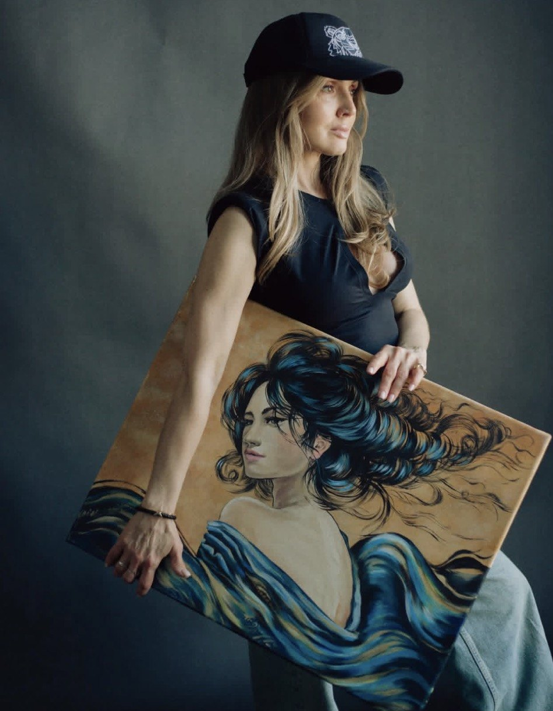
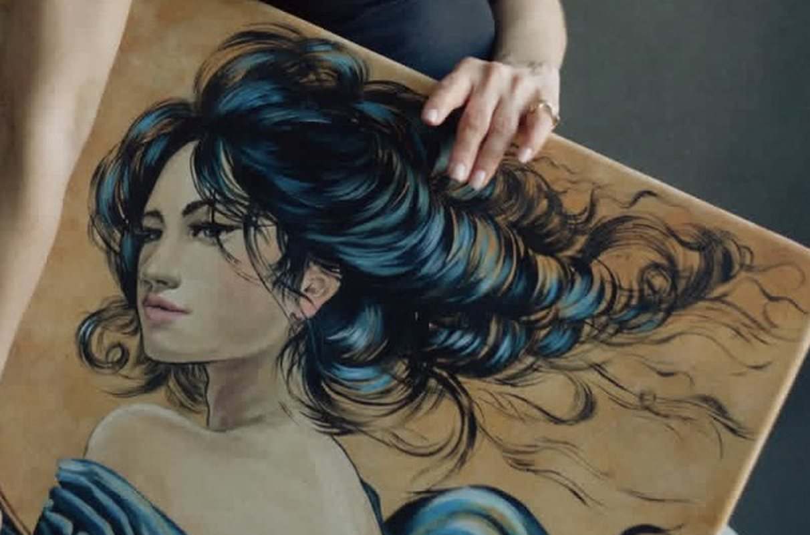
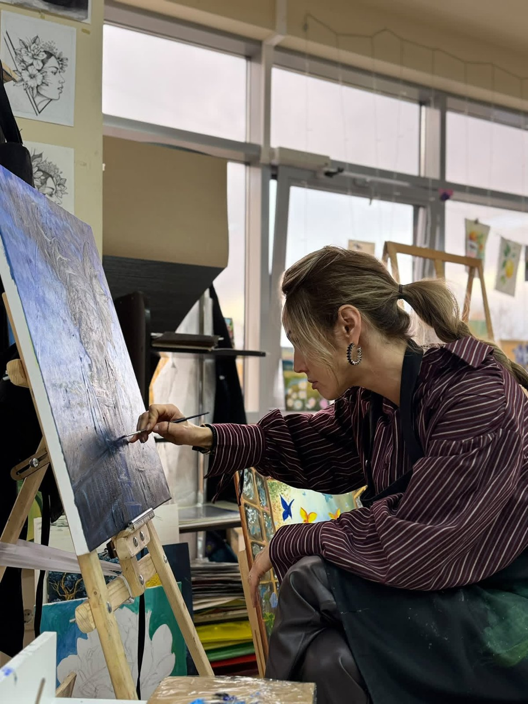
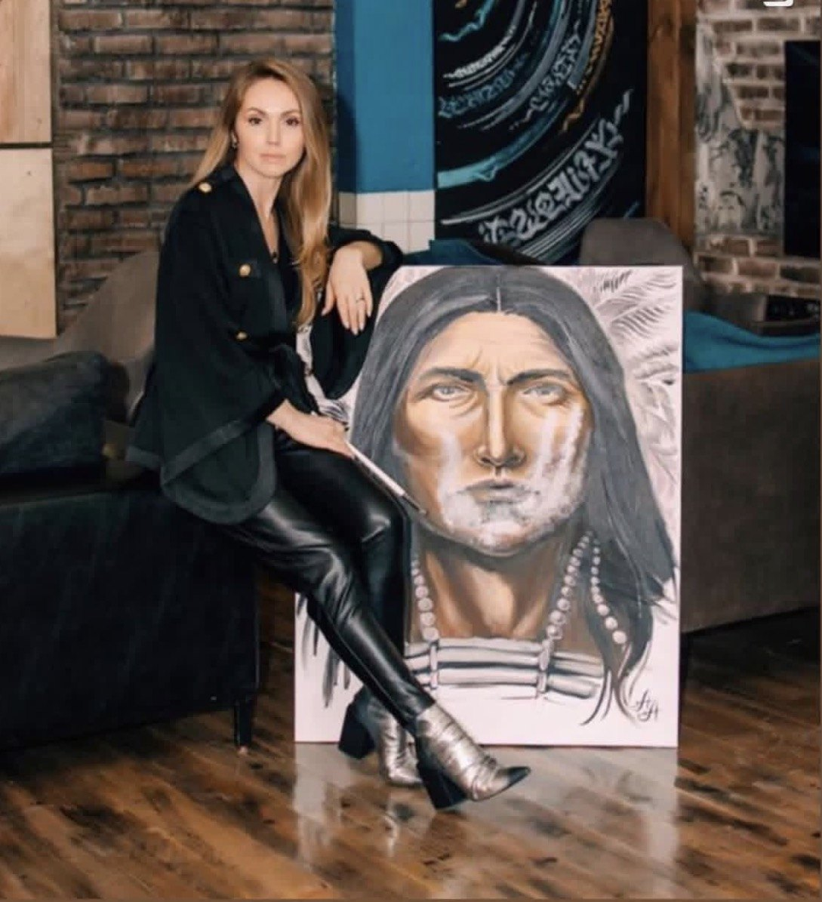
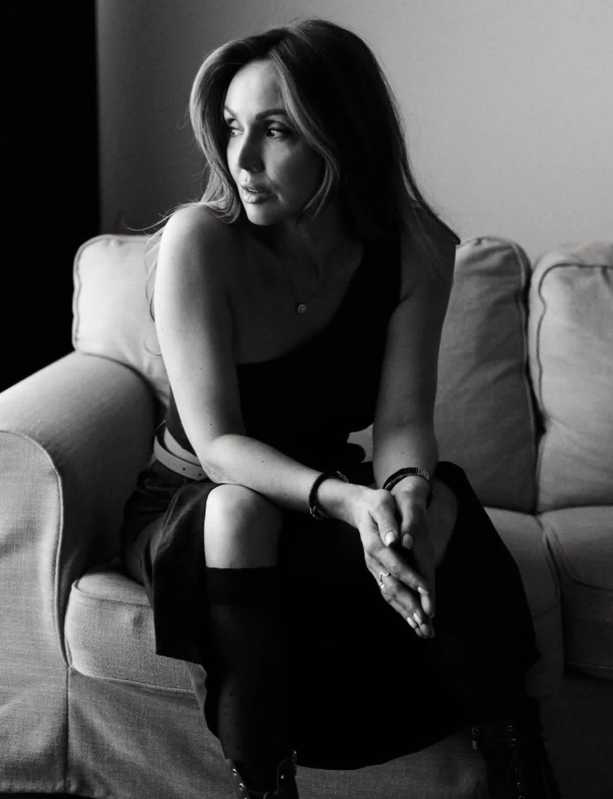
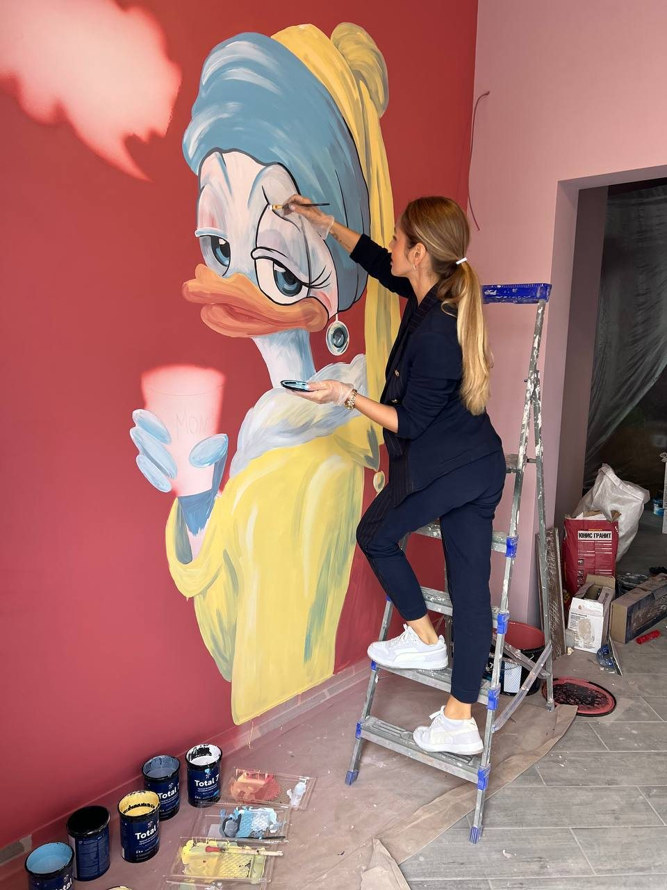
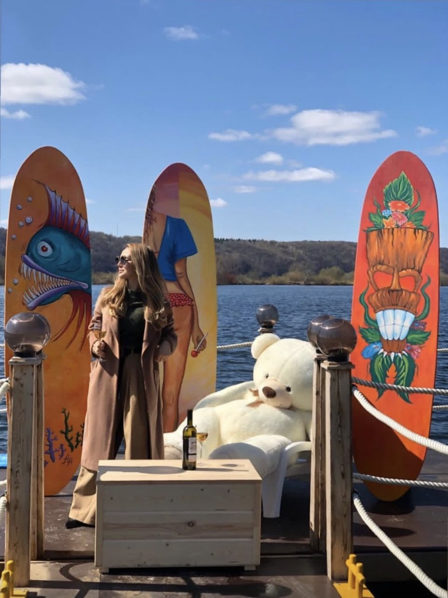
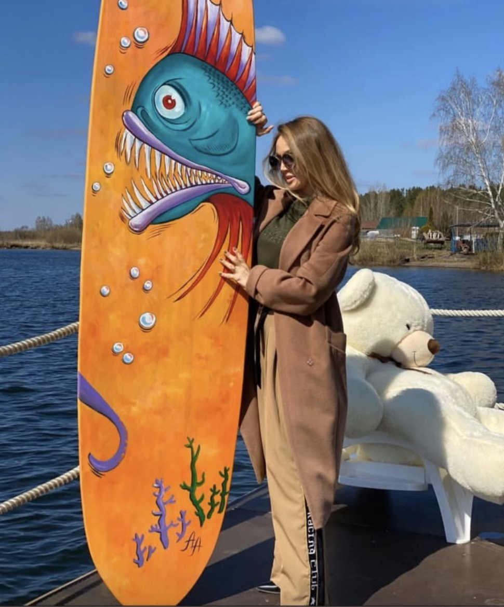
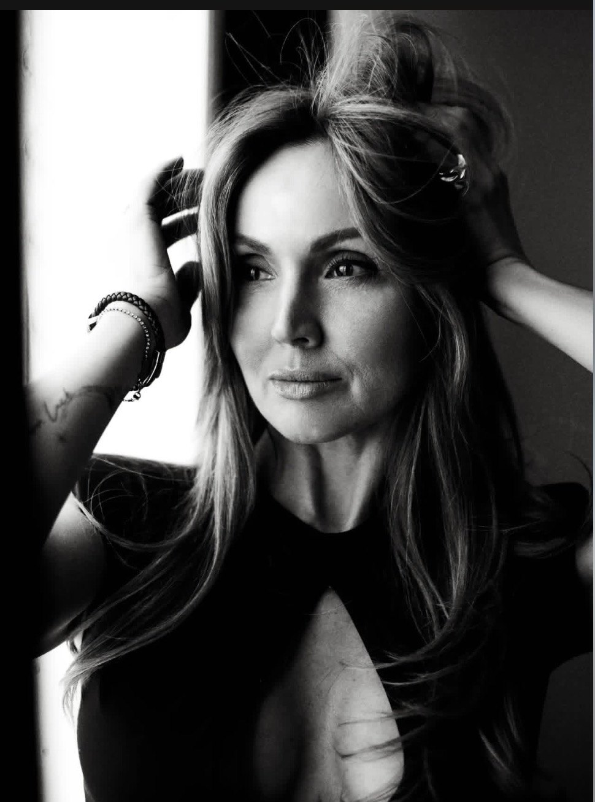

Холст и масло
Живопись
Картины, в которых живут эмоции, характер и красота момента.

Художник. Автор. Создатель творческих пространств.
Я создаю картины, в которых живут эмоции, характер и красота момента.
Для меня искусство — это не просто краски и холст. Это возможность увидеть привычное по-новому, почувствовать больше и открыть в себе то, для чего иногда не хватает слов.

Моя философия — создавать красоту, пробуждать чувства и помогать людям открывать новые грани себяАлёна Антипова
Я создаю картины, в которых встречаются эмоции, характер и красота, выходящая за пределы привычного.
СмыслДля меня живопись — это способ передать то, что невозможно выразить словами: настроение, внутреннюю силу, тонкие оттенки чувств и особенный взгляд на мир.
ПоискВ своих работах я исследую цвет, фактуру, форму и выразительность образа.
В интерьереМне важно, чтобы картина не просто украшала интерьер, а становилась его частью, создавала атмосферу, притягивала взгляд и каждый раз открывалась по-новому.

Картины, в которых живут эмоции, характер и красота момента. Нажмите на работу, чтобы рассмотреть её ближе.
Я пишу картины маслом, провожу творческие встречи и мастер-классы, объединяю людей через искусство.

Картины, в которых живут эмоции, характер и красота момента.
Объединяю людей через искусство и знакомлю их с ним ближе.
Помогаю открыть в себе радость творчества — даже если вы никогда прежде не держали кисть в руках.
Пространства, которые вдохновляют, и проекты, которые выходят за пределы привычного.
Помогаю открыть в себе радость творчества — даже если вы никогда прежде не держали кисть в руках.

Но моё творчество не ограничивается холстом.
Я верю в идеи, которые способны превращаться в проекты, в пространства, которые вдохновляют, и в мечты, которые заслуживают того, чтобы стать реальностью.
Мечтаю развивать собственные арт-пространства, знакомить людей с искусством и создавать проекты, которые выходят за пределы привычного.
Пространства, которые вдохновляют




Я верю, что искусство делает нашу жизнь глубже, смелее и красивее.
искусство чувствовать, видеть и создавать